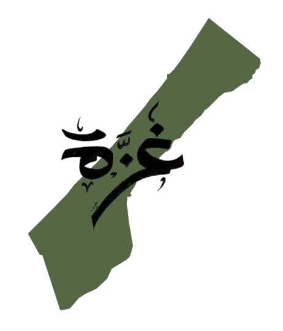

Panic Attacks of Gaza'sChildren Under war
Resources to help the children of Gaza in facing traumas caused by loud noises of war.
Resources to help the children of Gaza in facing traumas caused by loud noises of war.
This website aims to support children in Gaza facing fear and panic due to the conflict. We provide resources, techniques, and guidance to help them cope with trauma, especially from loud war noises, and create pathways for them to feel safer and begin healing.

Through our specialized resources, we offer trauma-informed support for children experiencing panic attacks and anxiety from war sounds. We provide practical coping strategies, educational materials for caregivers, and therapeutic tools designed specifically for young minds affected by conflict. Our approach focuses on building resilience while addressing the unique psychological needs of Gaza's children.